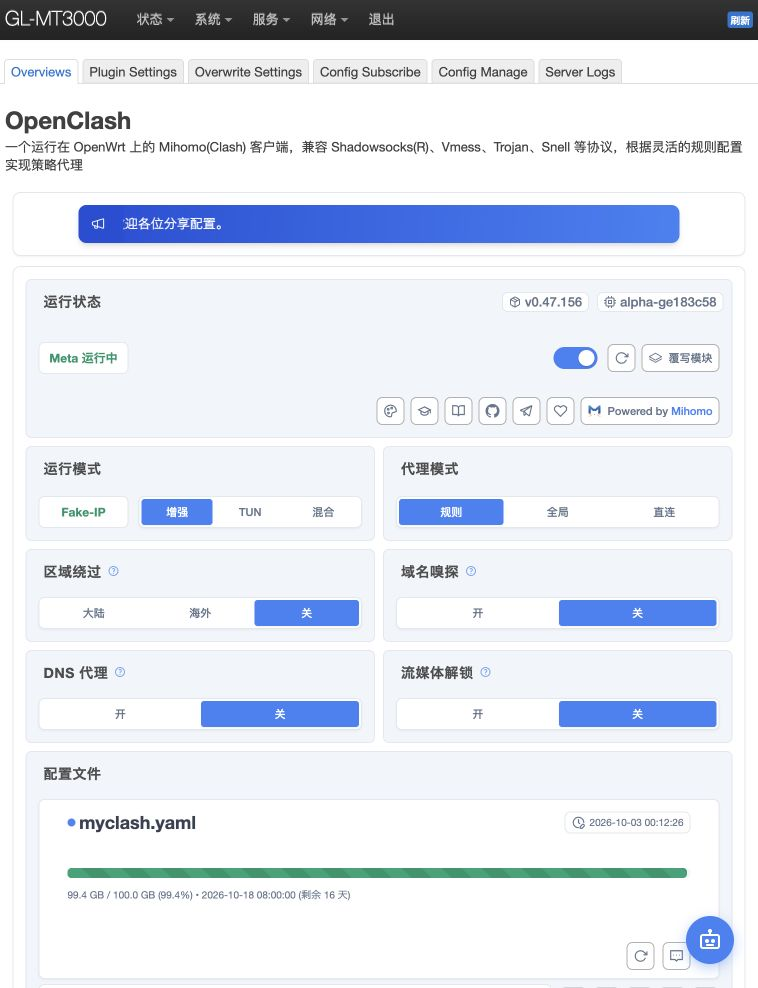
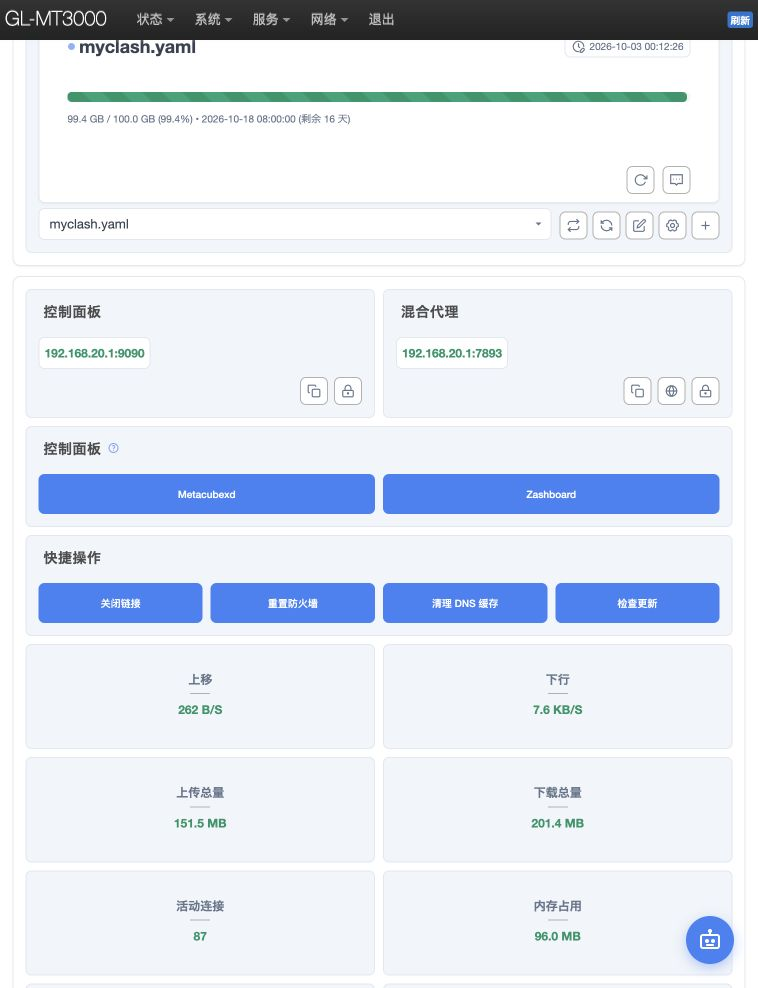
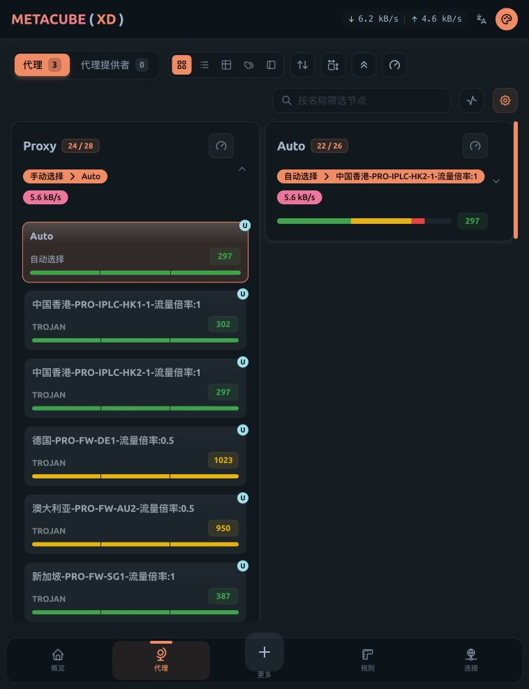

只更新节点列表
- 打开 Config Subscribe。
- 找到 myclash 那一行。
- 点击该行的 更新，等待下载完成。
- 回到概览检查配置时间；再到面板检查节点列表。
无需再次粘贴地址。更新后如果原节点被服务商移除，重新选择可用节点。
连接 Wi-Fi，打开后台，选择线路。
这份手册帮你独立管理 MT3000 上的 OpenClash。
这里的“VPN”由 OpenClash 实现。请进入 LuCI → 服务 → OpenClash，不要在 GL.iNet 自带的 WireGuard / OpenVPN 客户端里找这份订阅。本文不包含你的订阅链接、密码或面板密钥。
先连接 MT3000 的 Wi-Fi。下面的地址是局域网地址，离开这台路由器的网络后通常无法打开。
你当前使用的是 GL-MT3000-14c-5G。以后如果改过 Wi-Fi 名称，以新名称为准。
浏览器输入 http://192.168.20.1:8080/cgi-bin/luci/。用户名为 root，密码使用你设置的路由器管理员密码；Wi-Fi 密码不一定与它相同。
顶部选择「服务 → OpenClash」，打开 Overviews。也可以使用本页上方的快捷按钮直达；登录后若没有跳回，重新打开一次。
开启后等待显示 Meta 运行中，并检查下方网站连通性。关闭开关即停止 OpenClash 代理，普通直连上网是否可用取决于中兴设备的网络。
规则模式按配置分流；全局模式通常还需要在面板的 GLOBAL 组选择节点；直连模式不使用代理。仅换节点无需修改增强 / TUN / 混合模式。

订阅是一整份线路清单，节点是其中一条线路。换节点不用重新导入订阅。
在概览页向下滚动到「控制面板」，点击 Metacubexd。它通常会自动携带连接信息打开新标签页。
窄屏窗口中「代理」位于底部导航，宽屏布局可能在侧边。点击 Proxy 组标题展开节点。你当前配置使用这个组；未来换订阅后可能叫“节点选择”等其他名称。
可在「按名称筛选节点」输入“日本”，找到 日本-PRO-FW-JP2-流量倍率:0.2，点击卡片主体。卡片内的延迟数字 / 测试按钮只用于测延迟，不等于选中节点。
确认节点卡片高亮，且 Proxy 的当前选择变成该名称。通常立即生效，不用重启整个路由器。旧连接可能继续使用原路径，重新打开目标网页后再验证。
在 Proxy 里选 Auto。核对本教程时，Proxy 选择 Auto，Auto 当前选中香港 HK2-1；这是当时状态，会随自动测试而变化。
自动组依据配置中的健康检查选择线路，不等于全面测速。“流量倍率 0.2”通常是服务商计费倍率，不代表限速为 20%；具体以服务商说明为准。标注“有效期 / 剩余流量”的条目通常是信息提示，别当作正常线路选择。


当前配置名是 myclash.yaml。先分清你要“拉取新节点”，还是“更换订阅地址”。
无需再次粘贴地址。更新后如果原节点被服务商移除，重新选择可用节点。
点击 新增 → 填一个不同文件名（例如 new-provider）→ 粘贴新地址 → 保持“在线订阅转换”关闭 → 保存 → 更新。然后进入 Overviews → 配置文件，选择 new-provider.yaml，点击旁边的 切换 按钮。验证成功后再决定是否保留旧订阅。
| 按钮 / 入口 | 作用 |
|---|---|
| 保存配置 | 保存订阅名称和地址；之后还要更新，才能下载新配置。 |
| 订阅行的“更新” | 从该地址重新获取配置文件。 |
| 概览的配置文件“切换” | 选定当前真正运行的 YAML；新增订阅后尤其要做这一步。 |
| Config Manage | 管理 / 上传本地 YAML 文件。只有配置文件时使用；不要把网页地址当作配置文件上传。 |
| 在线订阅转换 | 可能把订阅交给第三方转换服务。本教程使用兼容订阅直接导入，不需要开启。 |
若要定期更新，可在 Config Subscribe 勾选「自动更新」，选择页面展开后的更新时间并保存配置。先确认手动更新能成功，再开启定时更新。
订阅失败时：检查地址是否完整、套餐是否有效、路由器时间是否正确，以及 Server Logs 中的下载或解析错误。报错日志和截图可能包含订阅密钥，分享前先遮挡。
单独关闭系统代理不一定关闭 TUN；测试时完全退出最容易避免混淆。手机也先关闭自己的 VPN，并确认连接 MT3000 Wi-Fi。
OpenClash 显示 Meta 运行中；下方「访问检查」选择路由器模式并刷新。再在 Mac 新开网页访问 YouTube，实际播放视频。路由器检查成功不能代替客户端验证。
尽量固定同一节点、同一测速服务器、同一 Wi-Fi 位置，关闭后台下载，测 2–3 次。蜂窝网络和服务商线路可能短时波动，别只凭一次结果改配置。
更换中兴设备前，关闭 Mac VPN 后曾测得 37.5 Mbps 下载、29.8 Mbps 上传；也出现过 0.93 Mbps。这些数值不代表当前中兴设备的性能，也不足以证明某个单一故障原因。
配置保存在路由器中。保持中兴设备通过 USB 给 MT3000 提供网络，开机等待中兴设备联网，再连接 MT3000 Wi-Fi 即可。确认 OpenClash 自动恢复运行；若未恢复，再进概览查看开关和日志。
确认连接的是 MT3000 Wi-Fi。LuCI 地址需要带 :8080，使用 http://。如果普通后台能开而 LuCI 不能开，在 GL.iNet「系统 → 高级设置」检查 LuCI 入口。LAN 地址改过后，本文快捷链接也要相应修改。
先确认 Meta 运行中，再从 OpenClash 的 Metacubexd 按钮重新进入，它会携带连接信息。直接访问 9090 面板可能需要手动填写主机 192.168.20.1、端口 9090，以及 OpenClash「复制密钥」得到的值。不要把这个密钥或含 secret 的链接公开分享。
确认是在规则模式下使用的 Proxy 组选择了节点，而不是只改 GLOBAL 或只点击延迟测试。查看「连接」页里新请求经过的规则和代理链；关闭旧页面，再新开页面测试。某些应用有专用策略组，需要在对应组中选择。
先不改底层设置。固定节点和测速服务器复测，检查中兴设备信号和剩余流量，查看 OpenClash 负载与连接。低延迟不代表高带宽。“重置防火墙”和模式变更不应作为日常换节点的步骤。
打开 Server Logs，检查下载失败、YAML 解析错误或节点不兼容。若保留了旧配置，在 Overviews 选择旧 YAML 并切换。不要急着恢复出厂。
当前安装时曾提示 IPv6 DHCP 可能影响连接。出现问题时先确认该网站的规则、DNS 和 IPv4 / IPv6 路径，再针对性调整。不要仅凭提示就同时修改 IPv6、DNS 和防火墙，否则难以判断原因。
这些链接仅访问你的局域网设备，不包含登录凭据。先连接 MT3000。
| 英文菜单 | 中文含义 | 什么时候使用 |
|---|---|---|
| Overviews | 概览 | 开关代理、切换配置、打开面板 |
| Plugin Settings | 插件设置 | 模式、DNS、外部控制、版本更新 |
| Overwrite Settings | 覆写设置 | 高级配置，日常换节点无需修改 |
| Config Subscribe | 配置订阅 | 新增、编辑、更新订阅地址 |
| Config Manage | 配置管理 | 上传和管理 YAML 文件 |
| Server Logs | 运行日志 | 检查启动、下载、连接错误 |